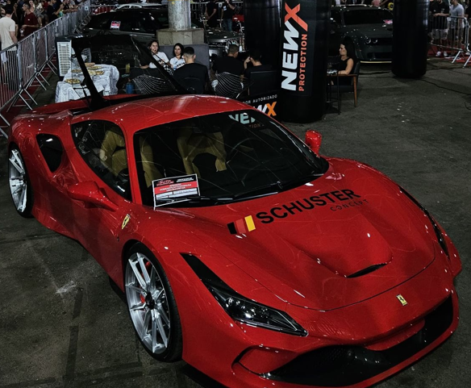

Sobre Mim
Bem-vindo ao meu portfólio! Aqui você encontra um pouco sobre mim e sobre minha tragetoria ate aqui.
De forma resumida, sou estudante de Ciências da Computação, motivado a aprofundar conhecimentos e se profissionalizar na área. Possuo formação inicial em Python e outros cursos. Entusiasta da tecnologia, busco compreender o funcionamento interno das máquinas e criar soluções inovadoras.
Projetos
Em relação a alguns projetos que eu elaborei, forma mais questões em sala de aula, estudos dentre outros, porem sempre presentes no meu github.
Exemplo de Código em C/C++
Segue alguns exemplos de codigos que eu elaborei em sala de aula, tanto como desafio passado por professores quanto elaborado por mim mesmo.
#include
using namespace std;
int main() {
int a = 2, b = 4 , c = 4;
if ( ( a < 2 && ((b!= 3) || (c == 3)));
printf("saida 1");
if ((c==3) || (c == 4));
printf("saida 2"); if ( (a < 3) && (b > 4) ) printf("saida 3");
else
if (a==2) if (b= 5) printf("saida 4"); else
printf("saida 5");
else
printf("saida 6");
return 0;
}
Hobbys
Curto muito carros e fotografia em geral, sendo esse meu passatempo. Como de exemplo, temos essa foto tirada por mim.
Cursos
Possuo alguns cursos feitos na Colaborar EAD sobre Python, totalizando mais de 80 horas em cursos introdutórios na linguagem.
Contato
Segue algumas formas de entrar ntre em contato comigo para outras oportunidades de trabalho, parcerias ou um bom bate-papo!